potree.org
-
github
-
twitter
1.4RC
Appearance
- Point Budget: 1,000,000
- Point Size: 1.43
- Field of View: 60
- Opacity: 1.00
- Fixed
- Squares
- Eye-Dome-Lighting
- radius: 1.9
- strength: 0.4
Navigation

 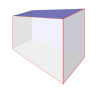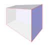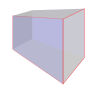
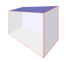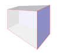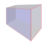- move speed 86.4
Tools
 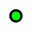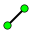
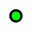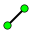 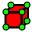
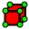
Measurements
Material
-
RGB - Elevation Range: -355.47 to 240.04
Scene
Classification Filter
Settings
- Min Node Size:
- Highlight Inside
About
- Potree is a viewer for large point cloud / LIDAR data sets, developed at the Vienna University of Technology. (github)
- Author: Markus Schütz
- License: FreeBSD (2-clause BSD)
- Libraries:
- Donators:
- Credits: